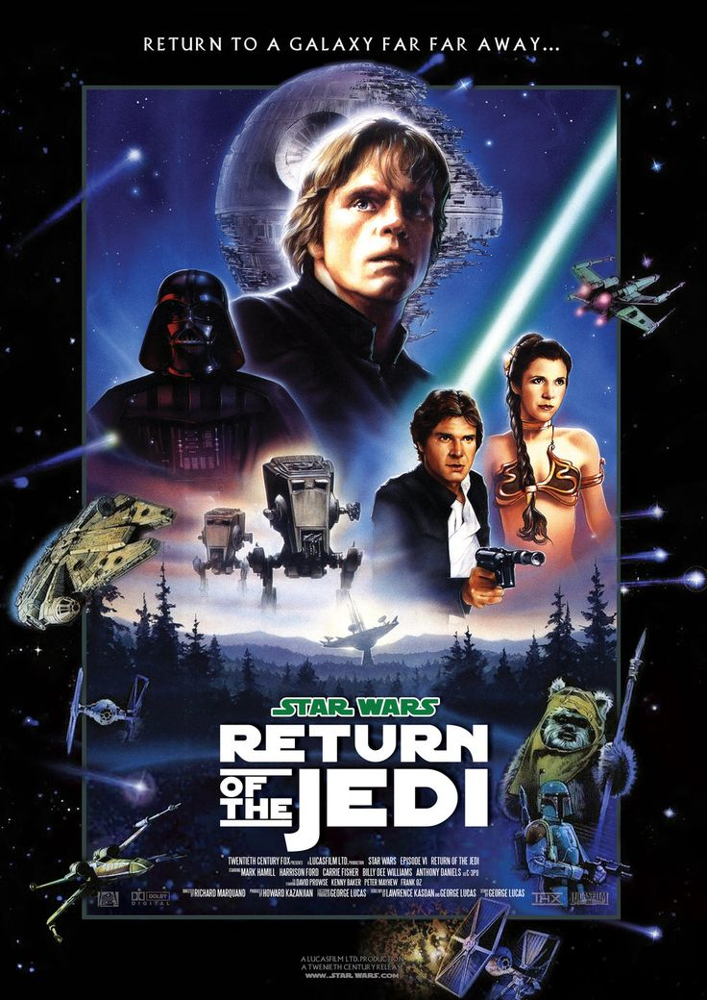
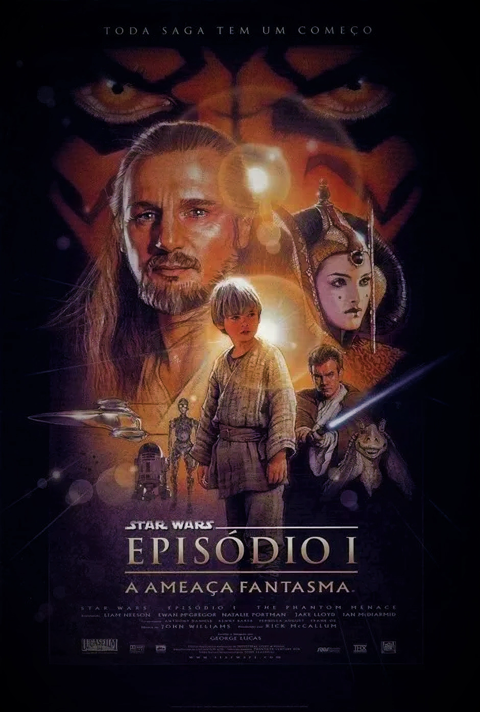
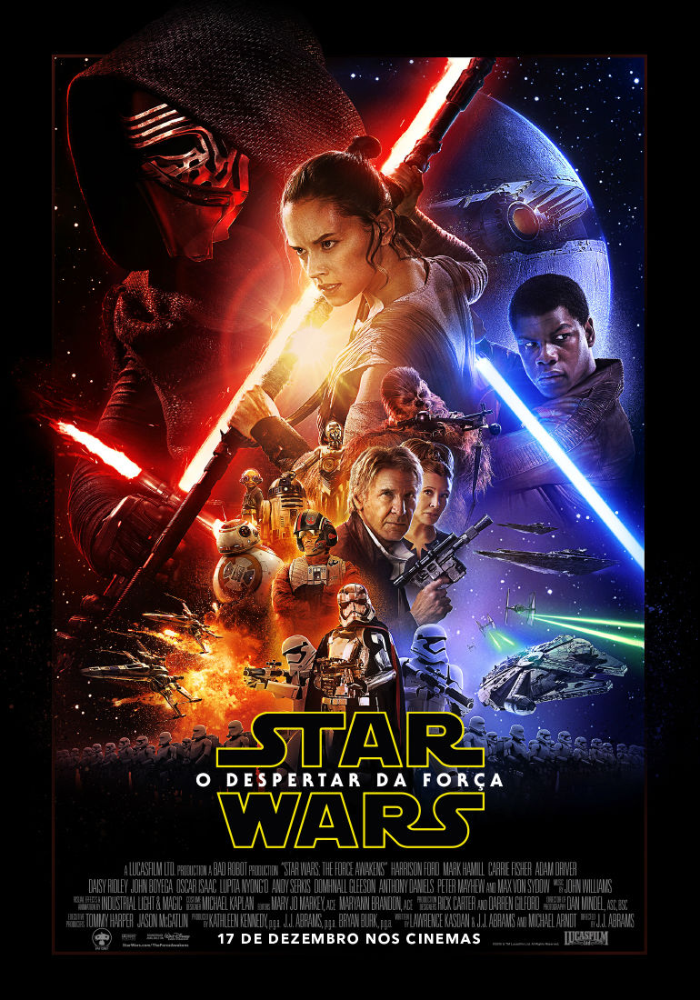
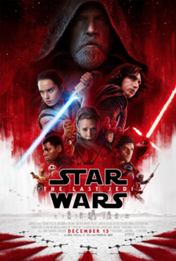
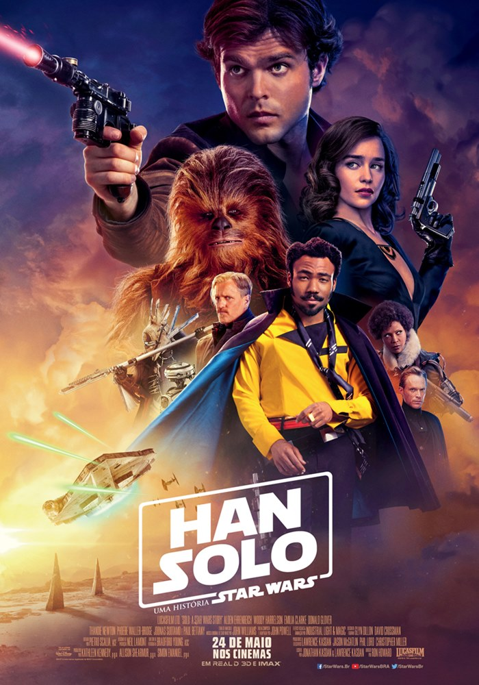
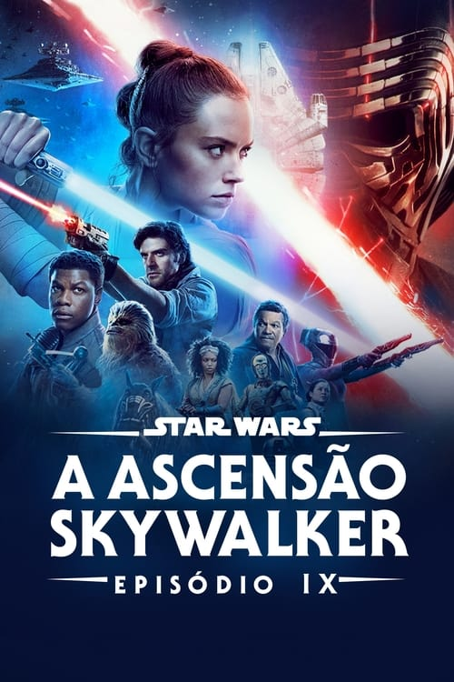

Sobre Star Wars
Star Wars é uma franquia do tipo space opera estadunidense criada pelo cineasta George Lucas, que conta com uma série de nove filmes de fantasia científica e dois spin-offs. O primeiro filme foi lançado apenas com o título Star Wars, em 25 de maio de 1977, e tornou-se um fenômeno mundial inesperado de cultura popular, sendo responsável pelo início da "era dos blockbusters", que são superproduções cinematográficas que fazem sucesso nas bilheterias e viram franquias com brinquedos, jogos, livros, etc. Foi seguido por duas sequências, The Empire Strikes Back e Return of the Jedi, lançadas com intervalos de três anos, formando a trilogia original, que segue o trio icônico formado por Luke Skywalker, Han Solo e Princesa Leia, que luta pela Aliança Rebelde para derrubar o tirano Império Galáctico; paralelamente ocorre a jornada de Luke para se tornar um cavaleiro Jedi e a luta contra Darth Vader, um ex-Jedi que sucumbiu ao Lado Sombrio da Força e ao Imperador.
Filmes em ordem de lançamento
Episode IV – A New Hope

Star Wars: Episode IV – A New Hope é um filme épico/space opera norte-americano, o primeiro da saga homônima a ser lançado em 25 de maio de 1977, e o quarto na ordem cronológica da trama, escrito e dirigido por George Lucas. Conta a história do jovem fazendeiro Luke Skywalker que, após adquirir dois droids, envolve-se na Guerra Civil Galáctica entre o tirano Império Galáctico e a Aliança Rebelde, ao lado do contrabandista Han Solo. Um dos robôs contém na memória o projeto secreto da super arma do Império, Estrela da Morte, roubado pelos rebeldes e inserido no droid por sua líder, Princesa Leia, que com isso espera destruir o Império e salvar a galáxia.
Episode V – The Empire Strikes Back

O filme é ambientado três anos depois de Guerra nas Estrelas. O Império Galáctico, sob a liderança do vilão Darth Vader e do misterioso Imperador, está em busca de Luke Skywalker e o resto da Aliança Rebelde. Enquanto Vader procura incansavelmente o pequeno grupo de amigos de Luke — Han Solo, Princesa Leia Organa e outros — através da galáxia, Luke é ensinado pelo Mestre Yoda a como usar a Força. Quando Vader captura os amigos de Luke, Luke deve decidir se vai completar seu treinamento e se tornar um Cavaleiro Jedi completo ou confrontar Vader e salvá-los.
Episode VI – Return of the Jedi
A história se passa aproximadamente um ano depois dos eventos de Star Wars Episode V: The Empire Strikes Back. O Império Galático, sob a supervisão militar do impiedoso Darth Vader, começou a construção de uma segunda Estrela da Morte, visando aniquilar a Aliança Rebelde. Como o Imperador Palpatine, também conhecido como Darth Sidious, planeja supervisionar pessoalmente as etapas finais de sua construção, a Frota Rebelde dá início a um ataque em grande escala à Estrela da Morte, para evitar o término de sua construção e matar Palpatine, pondo efetivamente um fim ao Império. Neste meio tempo, Luke Skywalker, um líder rebelde e cavaleiro jedi, luta para resgatar Vader, um ex-jedi que também é seu pai, de volta do Lado Sombrio da Força.
Episode I – The Phantom Menace
Ameaça Fantasma ocorre cerca de 32 anos antes do filme original, e segue o Mestre Jedi Qui-Gon Jinn e seu padawan Obi-Wan Kenobi, como protetores da Rainha Amidala, na esperança de conseguir um fim pacífico para uma disputa comercial interplanetária de grande escala. Em sua jornada juntam-se a eles Anakin Skywalker — um jovem escravo com forte conexão com a Força — simultaneamente com o retorno dos misteriosos Sith. É o ano de 32 ABY e uma disputa comercial entre a Federação de Comércio e o planeta Naboo levou à um bloqueio ao planeta. Chanceler Finis Valorum da República Galáctica secretamente envia dois Jedi, Qui-Gon Jinn e seu Padawan Obi-Wan Kenobi, como embaixadores à nave-capitânia Saak'ak para encontrar com o Vice-rei da Federação de Comércio Nute Gunray a fim de resolver a disputa.
Episode II – Attack of the Clones

O filme ocorre 10 anos após os acontecimentos de Star Wars Episódio I: A Ameaça Fantasma. A galáxia está à beira de uma guerra civil. Liderado por um ex-Jedi chamado Conde Dooku, milhares de sistemas planetários ameaçam deixar a República Galáctica. Após a senadora Padmé Amidala escapar de uma tentativa de assassinato, Anakin Skywalker, um aprendiz Jedi, se torna seu protetor, enquanto seu mestre Obi-Wan Kenobi, investiga o atentado contra a vida dela. Logo Anakin, Padmé, e Obi-Wan testemunham o início de uma nova ameaça à galáxia, as Guerras Clônicas. Ataque dos Clones estreou mundialmente em 16 de maio de 2002. Os críticos elogiaram os efeitos visuais, figurinos, trilha sonora, sequências de ação e performance de Ewan McGregor como Obi-Wan Kenobi, mas criticaram o romance de Anakin e Padmé, os diálogos, a maioria das atuações e o ritmo do filme.
Episode III – Revenge of the Sith

O filme começa três anos após o início das Guerras Clônicas. Os Cavaleiros Jedi estão espalhados por toda a galáxia, liderando uma guerra maciça contra os Separatistas. O Conselho Jedi incumbe o Mestre Jedi Obi-Wan Kenobi de eliminar o notório General Grievous, líder do Exército Separatista. Enquanto isto, o Cavaleiro Jedi Anakin Skywalker se aproxima de Palpatine, o Supremo Chanceler da República Galáctica e, desconhecido do público, um Lord Sith. Sua amizade aprofundada ameaça a Ordem Jedi, a República, e o próprio Anakin. A Vingança dos Sith quebrou vários recordes de bilheteria durante sua semana de abertura e arrecadou US$ 848 milhões mundialmente, sendo a terceira maior bilheteria da franquia Star Wars. Foi o filme de maior bilheteria de 2005 nos Estados Unidos e a segunda maior bilheteria do mundo no ano atrás de Harry Potter e o Cálice de Fogo.
Episode VII – The Force Awakens
O Despertar da Força se passa aproximadamente trinta anos após os acontecimentos de Return of the Jedi, e acompanha a jornada de Rey, que acaba encontrando um droide, BB-8, com informações do paradeiro de Luke Skywalker que está desaparecido. Ela é acompanhada por Finn, um stormtrooper desertor da Primeira Ordem, uma organização que quer reaver o Império Galáctico e luta contra a Resistência, comandada por Leia Organa. A aventura inesperada leva Rey a descobrir sua forte conexão com a Força e enfrentar o Lado Sombrio. A trilogia sequela de Star Wars era especulada desde os anos 80. Mas apesar de George Lucas ter escrito esboços sobre, ele negou que iria fazer uma nova trilogia após ter escrito e produzido os três filmes que narram a história de Anakin Skywalker. Em 2012, Lucas vendeu a Lucasfilm para a The Walt Disney Company, que optou por criar uma nova história ao invés de seguir os esboços de Lucas. Michael Arndt fez o tratamento original da história, mais tarde reescrito por Lawrence Kasdan e J. J. Abrams, também diretor e co-produtor da produção.
Rogue One: A Star Wars Story

A narrativa de Rogue One: A Star Wars Story é estabelecida entre os acontecimentos de A Vingança dos Sith e Uma Nova Esperança. A história do filme se baseia em um grupo de combatentes da Aliança Rebelde se unindo para uma missão de roubar os planos da Estrela da Morte. A história se inicia 13 anos antes da explosão da primeira Estrela da Morte. Seis anos haviam se passado após a extinção da Ordem dos Cavaleiros Jedis, o desaparecimento do jovem Jedi Anakin Skywalker, o surgimento do cruel Lorde Sith Darth Vader como também o fato do Imperador Palpatine ter transformado a República Galáctica no temível Império Galáctico. A galáxia agora se encontrava dominada pela ditadura, escravidão e opressão. O Império Galáctico, inicia então uma busca por pessoas que possam contribuir para a construção de uma super-arma.
Episode VIII – The Last Jedi
Star Wars Episódio VIII: Os Últimos Jedi é o oitavo filme da franquia Star Wars e o segundo na Trilogia Sequela. O filme foi escrito e dirigido por Rian Johnson e produzido por Kathleen Kennedy e Ram Bergman. O elenco do filme contou com o retorno de Mark Hamill, Carrie Fisher, Adam Driver, Daisy Ridley, John Boyega, Oscar Isaac, Lupita Nyong'o, Domhnall Gleeson, Anthony Daniels, Gwendoline Christie e Andy Serkis. Novos membros incluem Benicio Del Toro, Laura Dern e Kelly Marie Tran. Também foi confirmado que Rian Johnson iria escrever o tratamento do Star Wars: The Rise of Skywalker. Daisy Ridley, Mark Hamill, John Boyega, Oscar Isaac, e demais membros do elenco estarão de volta em seus papéis anteriores, com inclusão de novos membros ao elenco: Benicio del Toro, Laura Dern, e Kelly Marie Tran. As filmagens tiveram início em fevereiro de 2016 e terminaram em julho do mesmo ano.
Solo: A Star Wars Story
No planeta Corellia, crianças órfãs são obrigadas a roubar para sobreviver. Os amantes Han e Qi'ra fazem uma fuga de uma gangue local. Eles subornam um oficial imperial com coaxium roubado (um poderoso combustível hiperespacial) para a passagem em um transporte de saída, mas Qi'ra é apreendida antes que ela possa embarcar. Han promete voltar para ela e se junta à Marinha Imperial como um cadete de vôo. Quando o oficial de recrutamento pede seu sobrenome, Han diz que está sozinho sem família, então o recrutador lhe dá o sobrenome "Solo".
Episode IX – The Rise of Skywalker
O filme tem J.J. Abrams de volta como Diretor, com o roteiro de Chris Terrio, Colin Trevorrow e Derek Connolly. Estrelando, Carrie Fisher, Mark Hamill, Adam Driver, Daisy Ridley, John Boyega, Oscar Isaac, Anthony Daniels, Naomi Ackie, Domhnall Gleeson, Richard E. Grant, Lupita Nyong'o, Keri Russell, Joonas Suotamo, Kelly Marie Tran, com Ian McDiarmid e Billy Dee Williams. As filmagens principais começaram em 2018, e seu primeiro trailer promocional foi divulgado em 12 de Abril de 2019 na Celebration Chicago. O filme foi lançado em 20 de Dezembro de 2019.